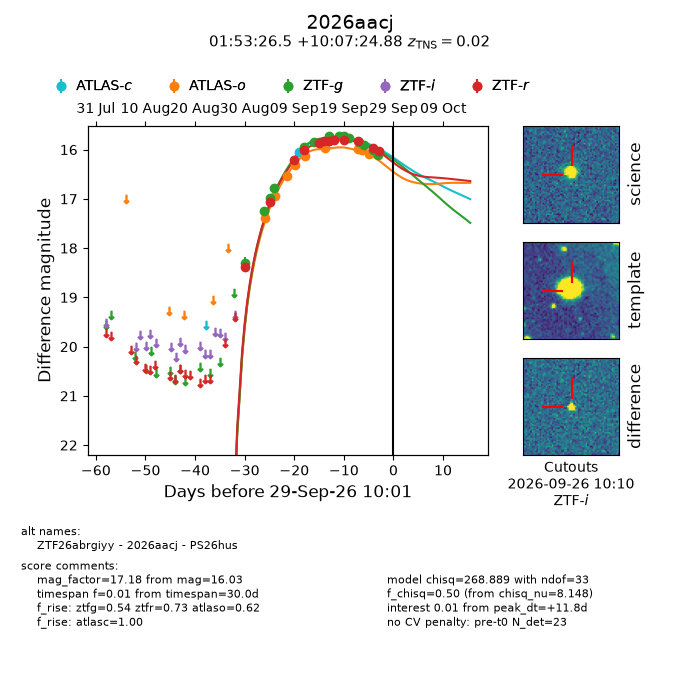
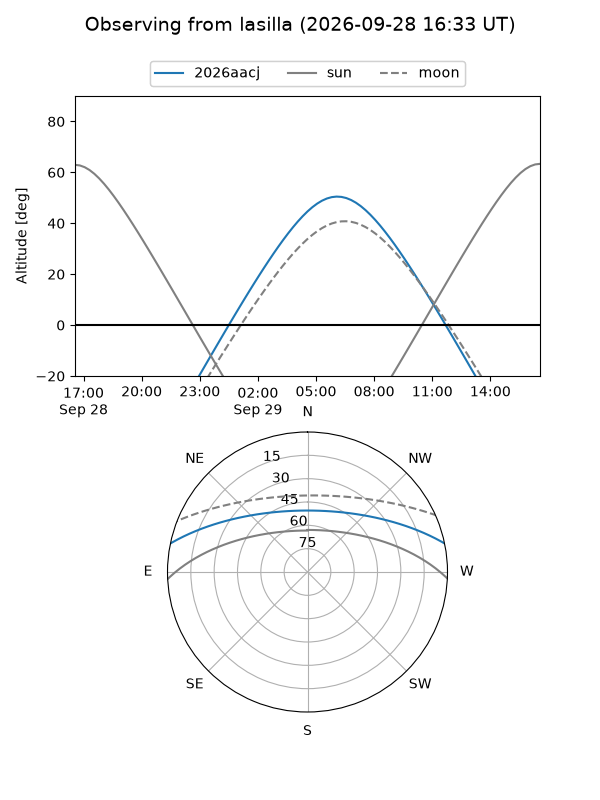
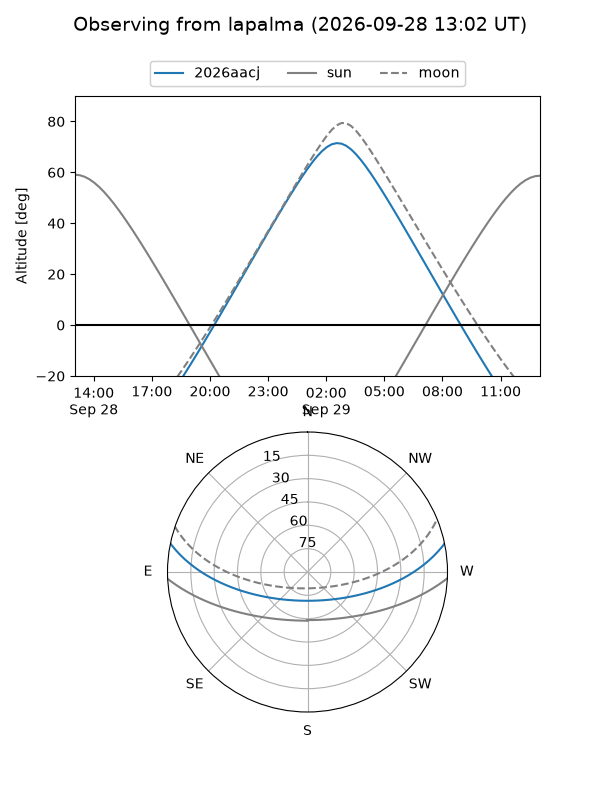
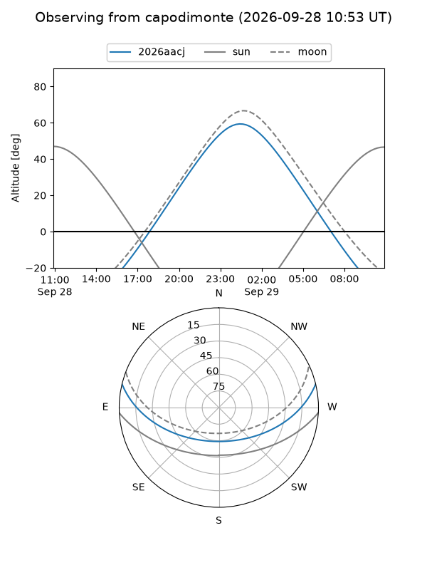
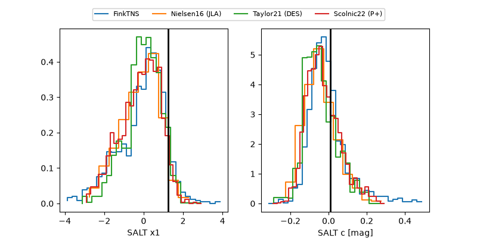

2026aacj
Target 2026aacj at 2026-09-29 10:03
Aliases and brokers:
FINK-ZTF: ztf.fink-portal.org/ZTF26abrgiyy
Lasair-ZTF: lasair-ztf.lsst.ac.uk/objects/ZTF26abrgiyy
ALeRCE-ZTF: alerce.online/object/ZTF26abrgiyy
YSE-PZ: ziggy.ucolick.org/yse/transient_detail/2026aacj
TNS name: wis-tns.org/object/2026aacj
Direct TNS query: direct search
alt names
ZTF26abrgiyy (ztf,fink_ztf)
2026aacj (tns,yse)
PS26hus (panstarrs)
Coordinates:
equatorial (ra, dec) = 28.3602,+10.12358
equatorial (HMS+DMS) = 01:53:26.46,+10:07:24.88
galactic (l, b) = (147.0012,-49.82832)
Flags:
TNS type: SN Ia
TNS redshift: 0.0200
peak dt: +11.8
Photometry:
last atlasc=15.78, atlaso=16.08, ztfg=16.11, ztfr=16.03
2 atlasc, 9 atlaso, 14 ztfg, 12 ztfr detections
Lightcurve

Visibility



Additional plots
